A360 para Arquitetas
Esta página é para quem executa os projetos. Você vai usar o A360 todos os dias para ver suas prioridades, registrar reuniões e entregáveis e manter sua agenda; o Vobi continua sendo onde a tarefa é editada.
endereço: architecture-360-production.up.railway.appdados do Vobi: sincronizados pela API todos os dias de manhãVobi somente leituraclique nas imagens para ampliar
O que é o A360 e de onde vêm os dados
O Architecture 360 (A360) é a central de trabalho da equipe de arquitetura da rucelle. Ele mostra, num só lugar, o que está no Vobi — projetos, tarefas, prazos, responsáveis — e acrescenta o que o Vobi não tem: agenda, reuniões com ata, entregáveis com aprovação do cliente, linha do tempo e alertas.
De onde vêm os dados
Do Vobi, automaticamente, todos os dias de manhã, pela API: ninguém exporta nem importa nada. A data da última sincronização aparece no topo de cada tela ("dados do Vobi de …"). O que você mudar no Vobi aparece aqui na sincronização seguinte.
O A360 não altera o Vobi
Tudo que vem do Vobi é somente leitura (o selo "Vobi · somente leitura" fica no topo). Tarefa, prazo e responsável continuam sendo editados no Vobi, como hoje.
O que é registrado no A360
Compromissos da sua Google Agenda, reuniões (pauta, ata, decisões, encaminhamentos), entregáveis e aprovações do cliente, comentários e históricos. Nada disso vai para o Vobi nem para o cliente.
Não é avaliação
Os números do A360 descrevem o trabalho como está registrado no Vobi. Não há ranking, nota ou cobrança automática. Dado que falta na fonte aparece como limitação, nunca como culpa.
Primeiro acesso
- Abra architecture-360-production.up.railway.app (funciona no computador e no celular).
- Entre com seu e-mail @rucelle.com.br e a senha provisória que você recebeu.
- O sistema pede uma senha nova (mínimo 10 caracteres). Guarde a nova; a provisória deixa de valer.
- Para trocar a senha depois: botão Senha no canto superior direito.
- Esqueceu a senha? Peça ao administrador (Rodrigo) uma redefinição: ele gera uma nova provisória.


Meu Dia
Abre toda vez que você entra. Mostra só o que é seu: tarefas em que você é responsável no Vobi e projetos em que você está como colaboradora.
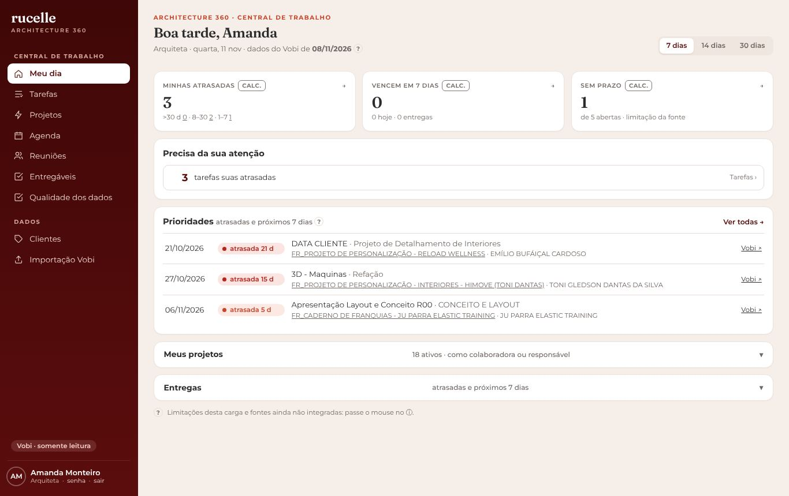
Como ler
- Minhas atrasadas: tarefas abertas cujo prazo no Vobi já passou (agrupadas por mais de 30 dias, 8–30, 1–7).
- Vencem em 7 dias: o que precisa sair esta semana; "entregas" são as tarefas de etapas de entrega.
- Sem prazo: tarefas suas sem data no Vobi — o A360 não consegue acompanhar essas; se forem suas, coloque o prazo no Vobi.
- Prioridades: atrasadas e próximas, com o link "Vobi ↗" que abre a tarefa na origem.
- Botões 7 / 14 / 30 dias mudam a janela de "próximas".
Rotina sugerida
- De manhã, abra o Meu Dia e veja atrasadas e próximas.
- Terminou algo? Conclua no Vobi; amanhã já aparece atualizado aqui.
- Prazo errado ou tarefa sem prazo: ajuste no Vobi.
- Marcador "CALC." = número calculado pelo A360 a partir do Vobi; "?" explica cada limitação.
Tarefas
Todas as suas tarefas do Vobi, com busca, filtros por prazo, etapa (com o nome exatamente como está no Vobi), projeto e cliente, ordenação e paginação.
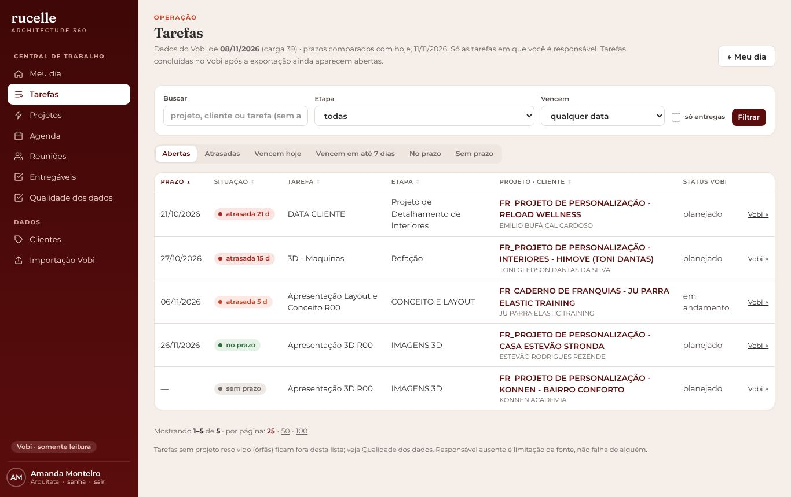
- Filtro Prazo: abertas, atrasadas, vence hoje, 7 dias, sem prazo, concluídas.
- Filtro Etapa: usa o nome original do Vobi ("02: CONCEITO/LAYOUT", "ESTUDO VOLUMÉTRICO"…).
- Os links do Meu Dia e do projeto abrem esta lista já filtrada.
Projetos e linha do tempo
Você vê os projetos em que participa. Dentro do projeto: dados do Vobi, todas as tarefas (abertas e concluídas, com a etapa original), reuniões, entregáveis, alertas e a linha do tempo.
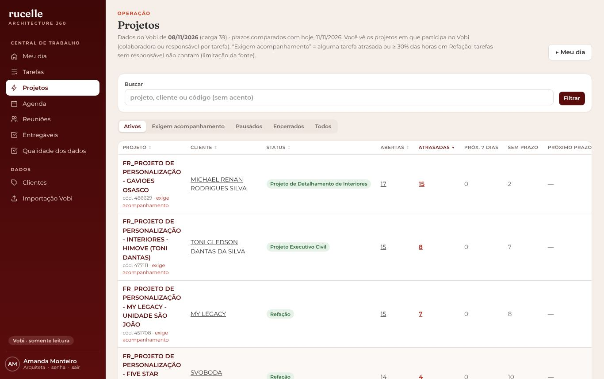
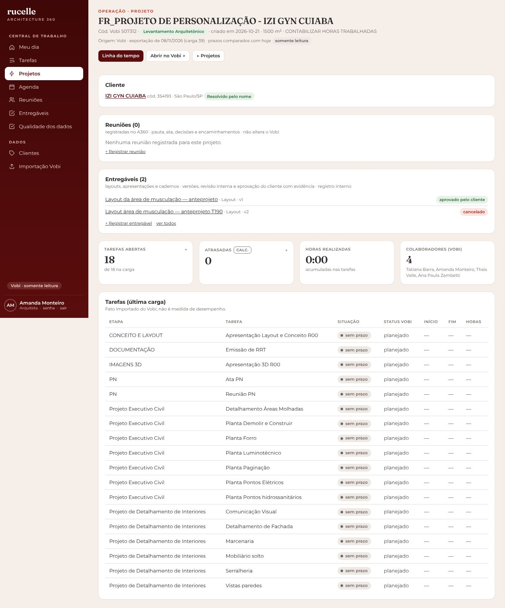
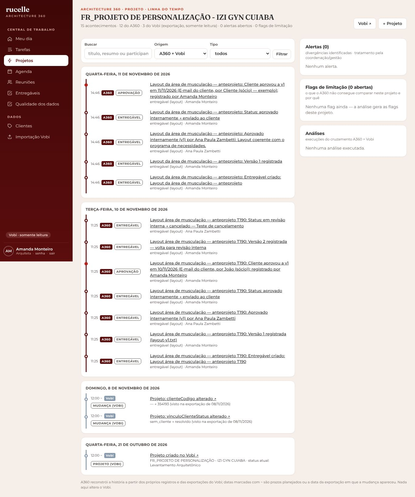
- Botão Vobi ↗ abre o projeto na origem para editar.
- Da página do projeto você registra reunião e entregável já ligados a ele.
- A linha do tempo é a história do projeto: use-a antes de uma reunião com o cliente para lembrar o que foi decidido e aprovado.
Agenda
A Agenda mostra só a sua agenda: as atividades que a gestão programou para você, os compromissos da sua Google Agenda e, se quiser, os prazos das suas tarefas do Vobi. Ninguém da equipe vê a sua agenda além da gestão; você não vê a agenda das colegas.
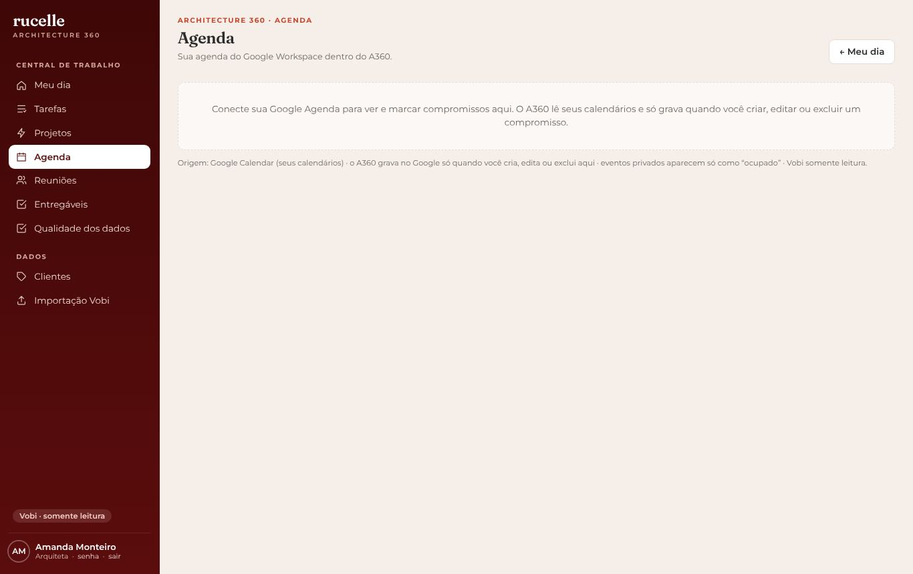
Como usar
- Abra a Agenda e veja o mês, a semana ou o dia.
- Clique numa atividade para ver o que é, o projeto, a etapa, o prazo (Data de término) e as orientações da gestão.
- Atividade de vários dias aparece com a marca de início e a de prazo.
- Botão Mostrar prazos das minhas tarefas do Vobi: acrescenta, tracejados, os prazos das suas tarefas que ainda não foram programadas.
- Executou? Atualize o status da tarefa no Vobi, como sempre. No dia seguinte a Agenda mostra.
Google Agenda
- Clique em conectar minha Google Agenda e autorize com seu e-mail @rucelle (só uma vez).
- Seus compromissos aparecem junto das atividades. Você pode criar, editar ou excluir compromissos no botão + Compromisso no Google.
- Compromisso particular aparece só como "ocupado".
- Reunião com cliente? No compromisso, clique em Registrar reunião.
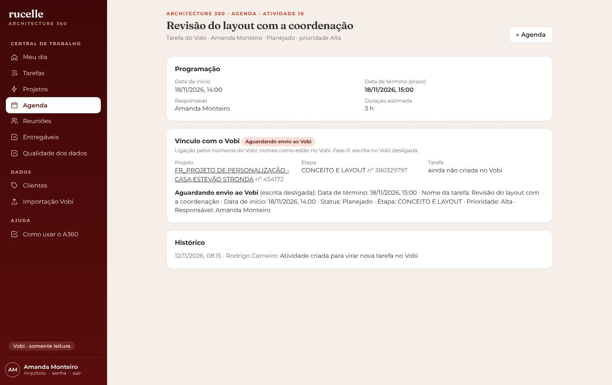
Reuniões
Toda reunião com cliente (ou interna relevante) é registrada aqui, ligada ao projeto. A ata pode ser escrita à mão ou gerada automaticamente a partir da transcrição do Google Meet.
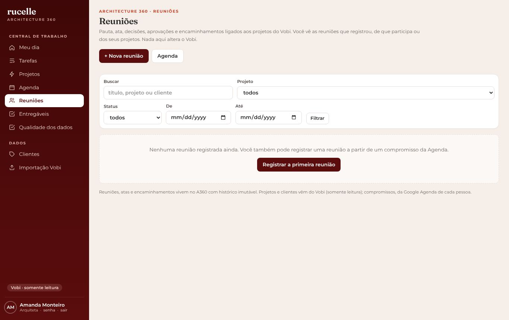
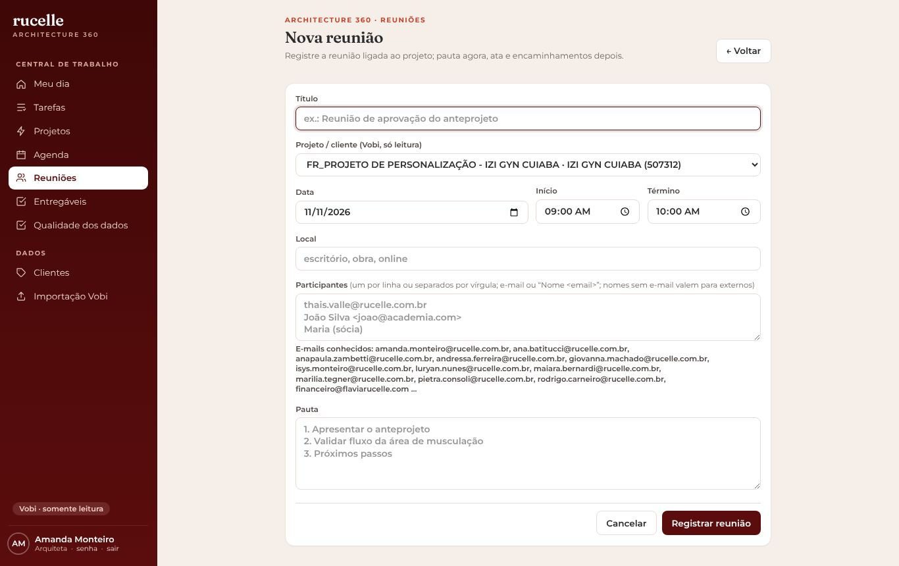

- Registre a reunião antes (pauta) — pelo projeto, pela Agenda ou em Reuniões › Nova.
- Depois da reunião, se gravou no Meet: baixe a transcrição do Drive (Documento Google › exportar .docx ou .txt) e envie em Transcrição. A IA gera a ata com resumo, decisões, aprovações e encaminhamentos.
- Confira cada item extraído: Confirmar os corretos, descartar os errados. Itens marcados "confirmar" são sugestões, não registros.
- Sem transcrição: escreva a ata e registre decisões, aprovações e encaminhamentos à mão.
- Marque a reunião como realizada. O histórico guarda tudo, inclusive versões da ata.
- Para mandar ou arquivar a ata: Exportar ata (.docx) ou Exportar ata com papel timbrado (logo e contatos da rucelle). O timbrado é opcional. Só entram itens confirmados.
Entregáveis
Layout, apresentação, caderno executivo, imagens 3D: cada entregável tem versões, passa pela revisão interna da coordenação e recebe a resposta do cliente com evidência. É registro interno; nada é enviado ao cliente por aqui.
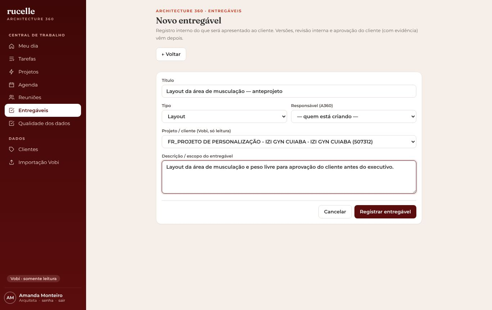
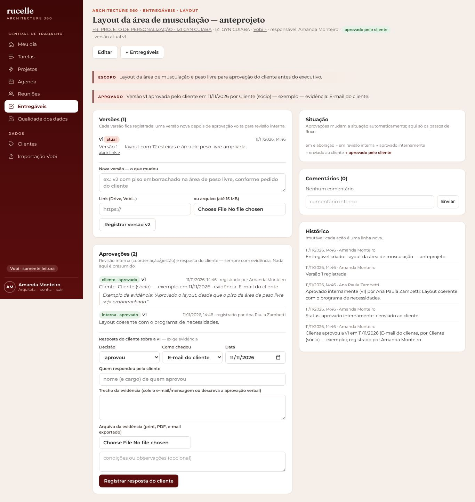
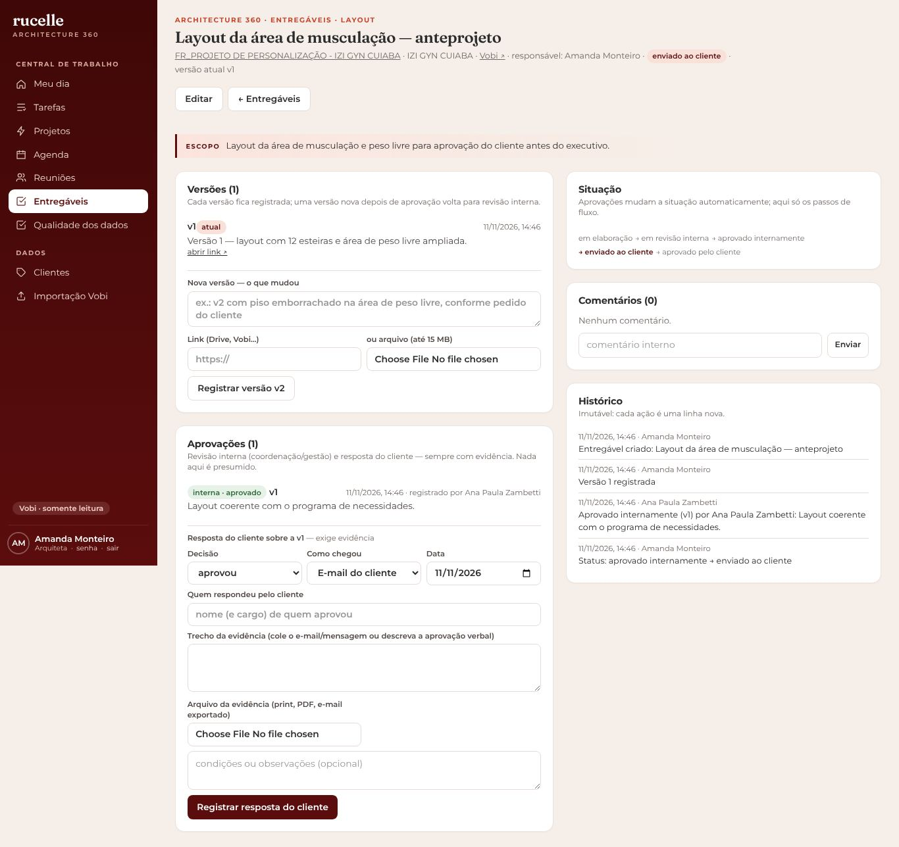
- Em Entregáveis › + Novo entregável (ou pela página do projeto): título, tipo, descrição.
- Precisa do papel timbrado da rucelle para montar um documento? Em Entregáveis › Modelos institucionais, baixe o modelo (.docx) e escreva no corpo.
- Registre a versão: link do Drive ou arquivo (até 15 MB) e o que mudou.
- Clique em Enviar para revisão interna. A coordenação aprova ou pede ajustes.
- Aprovado internamente? Envie ao cliente pelo canal habitual e marque enviado ao cliente.
- Quando o cliente responder, registre a resposta com a evidência: cole o e-mail/mensagem, anexe o print ou aponte o item de aprovação da reunião.
- Nova versão depois de uma aprovação volta automaticamente para revisão interna.
O que você vê e o que não vê
Você vê
- Suas tarefas e seus projetos (colaboradora ou responsável no Vobi).
- Sua Agenda: atividades programadas para você, seus compromissos do Google e seus prazos do Vobi.
- Reuniões que você criou, de que participa ou dos seus projetos.
- Entregáveis dos seus projetos.
- Alertas dos seus projetos (só leitura).
- Qualidade dos dados, Clientes e Importação (consulta).
Você não vê
- Painel de Gestão, Capacidade e fluxo, Pessoas, Usuários.
- Projetos e tarefas de outras pessoas.
- A agenda das colegas e a visão da equipe; criar atividades é da gestão.
- Tratamento de alertas e aprovação interna de entregáveis (coordenação/gestão).
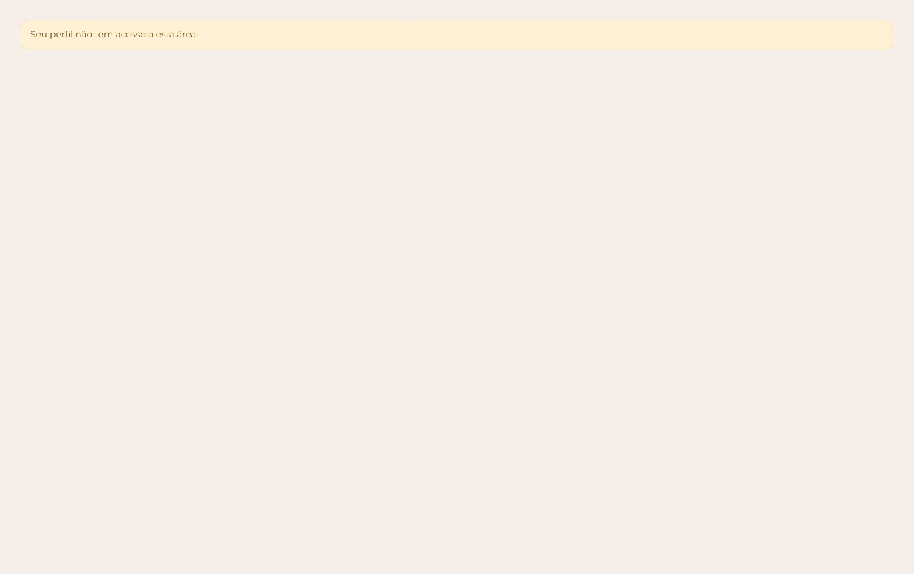
Teste rápido
Terminei uma tarefa. Onde eu marco como concluída?
O cliente aprovou o layout por WhatsApp. O que faço no A360?
A IA gerou a ata e extraiu 3 decisões. Elas já valem como registro?
A gestão programou uma atividade para você ligada a uma tarefa do Vobi. Onde você marca que concluiu?
Quem vê o seu compromisso particular na Google Agenda?
Respostas erradas mostram a correta. Nada é registrado; é só para você.